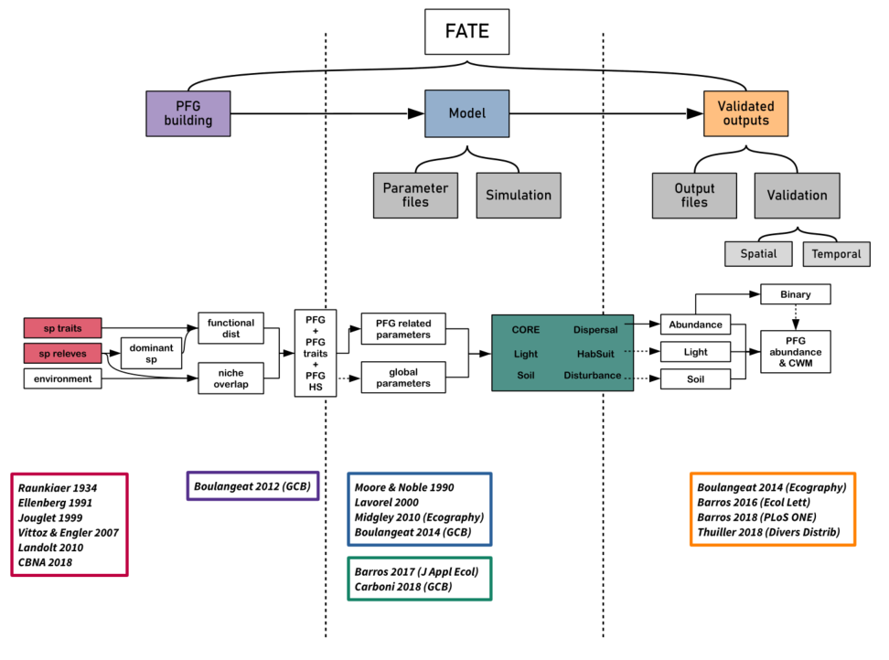

vignettes/fate_tutorial_0_publications.Rmd
fate_tutorial_0_publications.Rmd
Moore A. D. and Noble I. R. (1990), An individualistic model of vegetation stand dynamics. https://doi.org/10.1016/s0301-4797(05)80015-5
Paper
Lavorel S., Davies I. D. and Noble I. R. (2000). LAMOS: a landscape modelling shell. Landscape Fire Modeling-Challenges and Opportunities. Natural Resources Canada, Canadian Forest Service, Vancouver, BC, Canada, 25-28.
Midgley G. F., Davies I. D., Albert C. H., Altwegg R., Hannah L., Hughes G. O., O’Halloran L. R., Seo C., Thorne J. H. and Thuiller W. (2010), BioMove – an integrated platform simulating the dynamic response of species to environmental change. Ecography, 33: 612-616. https://doi.org/10.1111/j.1600-0587.2009.06000.x
Paper
___________________________________________________________________________________________________
Boulangeat I., Philippe P., Abdulhak S., Douzet R., Garraud L., Lavergne S., Lavorel S., Van Es J., Vittoz P. and Thuiller W. (2012), Improving plant functional groups for dynamic models of biodiversity: at the crossroads between functional and community ecology. Glob Change Biol, 18: 3464-3475. https://doi.org/10.1111/j.1365-2486.2012.02783.x
Paper Supplementary Material
Boulangeat I., Georges D. and Thuiller W. (2014), FATE‐HD: a spatially and temporally explicit integrated model for predicting vegetation structure and diversity at regional scale. Glob Change Biol, 20: 2368-2378. https://doi.org/10.1111/gcb.12466
Paper Supplementary Material
___________________________________________________________________________________________________
Boulangeat I., Georges D., Dentant C., Bonet R., Van Es J., Abdulhak S., Zimmermann N. E. and Thuiller W. (2014), Anticipating the spatio‐temporal response of plant diversity and vegetation structure to climate and land use change in a protected area. Ecography, 37: 1230-1239. https://doi.org/10.1111/ecog.00694
Paper
Barros C., Thuiller W., Georges D., Boulangeat I., Münkemüller T. and Bellwood D. (2016), N‐dimensional hypervolumes to study stability of complex ecosystems. Ecol Lett, 19: 729-742. https://doi.org/10.1111/ele.12617
Paper Supplementary Material
Barros C., Guéguen M., Douzet R., Carboni M., Boulangeat I., Zimmermann N. E., Münkemüller T., Thuiller W. and Mori A. (2017), Extreme climate events counteract the effects of climate and land‐use changes in Alpine tree lines. J Appl Ecol, 54: 39-50. https://doi.org/10.1111/1365-2664.12742
Paper Supplementary Material
Barros C., Thuiller W. and Münkemüller T. (2018), Drought effects on the stability of forest-grassland ecotones under gradual climate change. PLoS ONE 13(10): e0206138. https://doi.org/10.1371/journal.pone.0206138
Paper Supplementary Material
Carboni M., Guéguen M., Barros C., Georges D., Boulangeat I., Douzet R., Klonner G., Van Kleunen M., Essl F., Bossdorf O., Haeuser E., Talluto M. V., Moser D., Block S., Conti L., Dullinger I., Münkemüller T. and Thuiller W. (2018). Simulating plant invasion dynamics in mountain ecosystems under global change scenarios. Glob Change Biol, 24:e289–e302. https://doi.org/10.1111/gcb.13879
Paper Supplementary Material
Thuiller W, Guéguen M, Bison M, et al (2018). Combining point‐process and landscape vegetation models to predict large herbivore distributions in space and time—A case study of Rupicapra rupicapra. Divers Distrib, 24:352–362. https://doi.org/10.1111/ddi.12684
Paper Supplementary Material